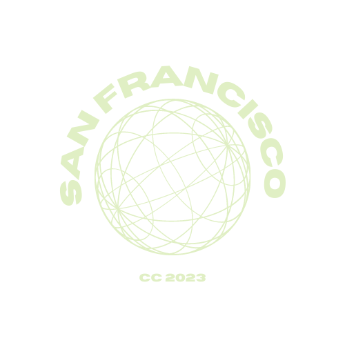
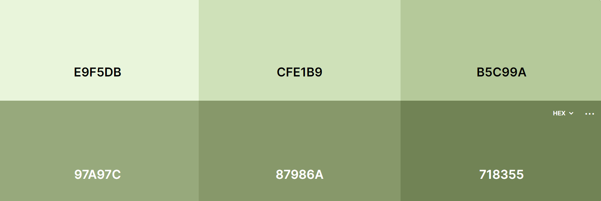
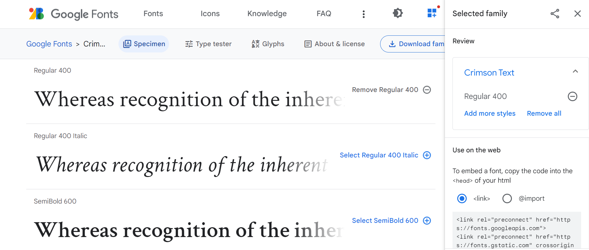
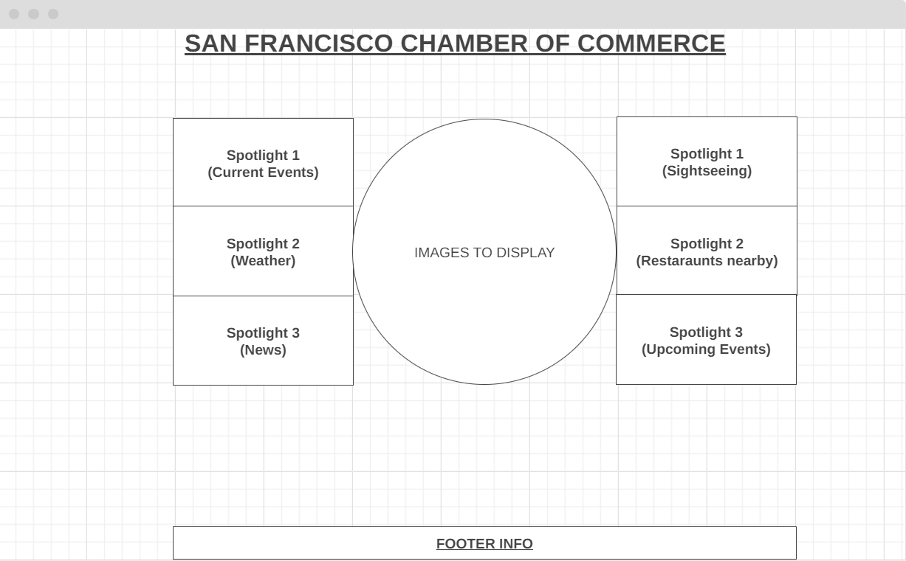

San Francisco Chamber of Commerce
Purpose
The San Francisco Chamber of Commerce is a website that introduces the city of San Francisco to the world! We have people from all over the world that come to see. The purpose of this website is to highlight the activities andd upcoming events that are taking place in the city of San Francisco.
Logo

Color Schema
This is the listed color palette:
Typography + Wireframe
This is the Google Font and Wireframe that I will be using:
 